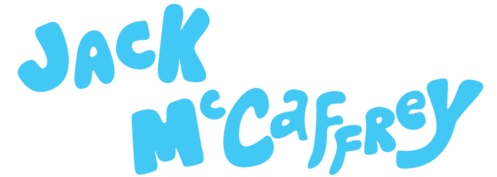

I've been creating animations since I was just a kid, starting out by making claymation videos with friends. My artistic inspirations come from exploring nature, researching psychology, and listening to music. Prior to starting HelloJelloShip, I recieved my BFA at Ringling College of Art and Design and worked in Los Angeles, designing and animating motion graphics for film marketing.
Beyond animation, I enjoy trail running, playing ukulele, and computer science. I currently reside in Princeton Junction, New Jersey.